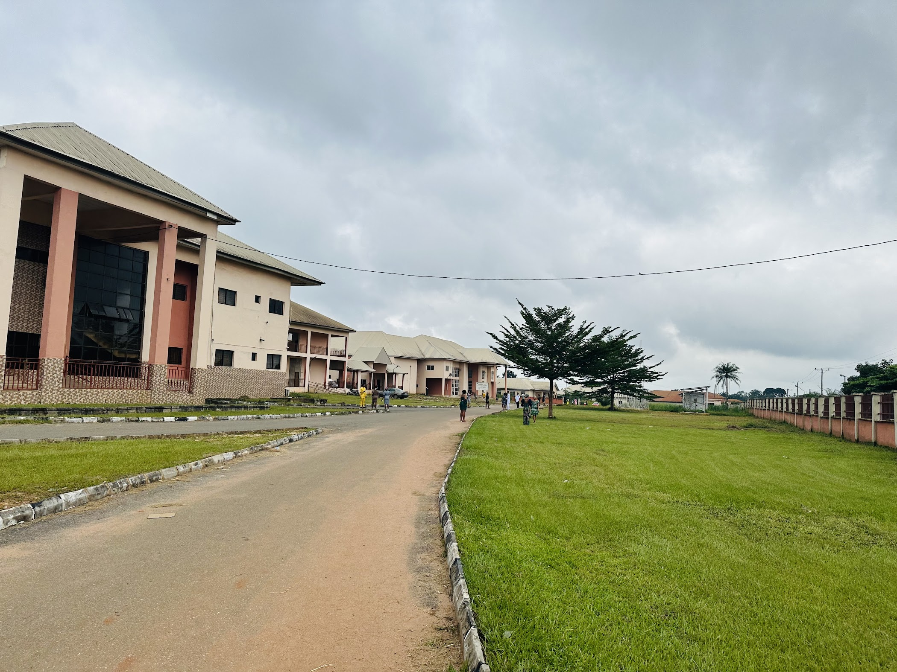

Healthcare · Education · Research
Advanced healthcare.
Teaching excellence.
Compassionate care.
A tertiary teaching hospital committed to specialist healthcare, medical education, research and patient-centred service for Imo State and beyond.
IMSUTH campus, Orlu
Start here
How can we help?
Loading patient links…
Welcome to IMSUTH
Care that treats today and teaches tomorrow.
Imo State University Teaching Hospital, Orlu combines patient care with the clinical education and research responsibilities of a teaching hospital.
Our purpose brings healthcare professionals, learners and researchers together around one priority: safe, respectful and reliable care for every patient.
 Hospital leadershipProf. Kenechi Anderson UwakweRead profile
Hospital leadershipProf. Kenechi Anderson UwakweRead profile
Clinical services
Specialist support, centred on you.
Explore services currently published by IMSUTH. Detailed pathways and clinic information will be added after departmental review.
Loading clinical services…
A teaching hospital
Advancing care through learning and inquiry.
IMSUTH provides a clinical environment where healthcare delivery, supervised training and research can strengthen one another.
About our teaching rolePlan your visit
Clear information before you arrive.
Emergency care
Emergency services are available 24 hours, every day.
If you are facing a life-threatening emergency, go directly to the hospital. A dedicated emergency telephone number is awaiting confirmation.